| 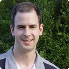 |
- David Barnes (Swinburne),
david.g.barnes@gmail.com
-
David Barnes is the senior research fellow in visualisation at the
Centre for Astrophysics and Supercomputing, Swinburne University of
Technology, in Melbourne, Australia. At Swinburne, David is
responsible for the scientific visualisation requirements of the
astronomers, and contributes to the public outreach and commercial
activities of the Centre. David has been active in developing
astronomy software for a number of years, and beyond his focus on
visualisation techniques, has contributed advanced processing
algorithms for 21-cm and pulsar radio astronomy.
|
| 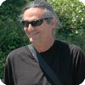 |
- Daniel Durand (CADC),
Daniel.Durand@hia.nrc.ca
- Daniel currently serves as an Astronomer with the Canadian Astronomy Data
Center.
|
| 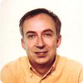 |
- Daniel Egret (CDS),
Daniel.Egret@obspm.fr
-
Daniel is currently president of Observatoire de Paris
(Paris Observatory).
As an astronomer at the Centre de Donnees astronomiques
de Strasbourg (CDS) until 2003, he has been involved in the
activities of data centers at an international level,
and has contributed to define concepts and tools for the
Virtual Observatory.
Daniel's research interests include the study of our Galaxy
through the use of optical and infrared surveys
(Hipparcos, Tycho, DENIS, GAIA), and the development of
innovative tools and technologies for data and information
handling.
|
| 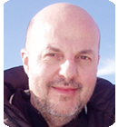 |
- Carlos Gabriel (ESA-ESAC),
Carlos.Gabriel@sciops.esa.int
- Carlos is a staff member of the European Space
Agency, currently working in the XMM-Newton Space Operations Centre,
at the European Space Astronomy Centre (ESAC),
located in Villafranca del Castillo, Spain. He has been working in
astronomical software development for more than ten years as well as
participating in the calibration of infrared and x-ray space-bourne
instruments. Currently he is leading the XMM-Newton scientific analysis
software development team.
|
| 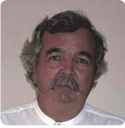 |
- Tom Handley (IPAC/Caltech/JPL),
thh@ipac.caltech.edu
-
Tom is currently Deputy Manager of the Infrared Processing
and Analysis Center (IPAC).
Within IPAC, Tom is involved in science information
development lifecycle across the board, from developing missions
(SIRTF), to operational missions (2MASS) and the long-term
curation of mission science products (IRSA). Recent research
areas include data mining, including cross-identification,
inforation discovery, data management, rapid access to
Terabyte-size datasets, and science information systems
architectures.
|
 |
- Tony Krueger (STScI),
krueger@stsci.edu
-
Tony Krueger is the Chief Engineer for Planning and Scheduling
at the Space Telescope Science Institute. He is responsible for the
technical oversight of the James Webb Space Telescope's and the
Hubble Space Telescope's planning and scheduling software systems.
|
 |
- Jim Lewis (IoA),
jrl@ast.cam.ac.uk
-
Jim Lewis is a scientist at the Cambridge Astronomy Survey Unit at the
University of Cambridge. He has been involved in developing data reduction
and pipeline software for about 15 years principally in the optical and
infrared wavebands. He is currently writing the pipelines for
WFCAM
(UKIRT's new multi-detector imager) and for
VISTA. In addition to his work in data reduction, he is also responsible
for the CASU data centre
which archives almost all of the optical and infrared telescope data from
the UK's ground-based facilities.
|
| 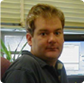 |
- Christopher J. Miller (CTIO),
cmiller@noao.edu
- Chris is an assistant astronomer working for the National
Optical Astronomy Observatory at Cerro-Tololo Interamerican
Observatory in La Serena, Chile. His research interests include
extragalactic studies, cosmology, galaxy formation, galaxy cluster,
AGN, and computational astrostatistics. He leads the development of
the NOAO NVO Portal as a member of the NOAO Data Products Program.
|
| 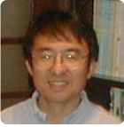 |
- Koh-Ichiro Morita (NAOJ),
morita@nro.nao.ac.jp
-
Koh-Ichiro is a member of the scientific staff at the Radio
Astronomy Division of the National Astronomical Observatory
Japan (NAOJ). He is also a computer system manager for the
Nobeyama Radio Observatory (NRO), NAOJ. Koh-Ichiro has been
involved for many years in the development and operation of
radio telescopes at NRO. Recently he has been participating
in the development of software for ALMA. His research
insterests include star formation and aperture synthesis
imaging.
|
| 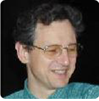 |
- François Ochsenbein (CDS),
francois@astro.u-strasbg.fr
- François Ochsenbein
is an astronomer currently in charge of the ``Astronomical Catalogues'' service
at the Centre de Données astronomiques de Strasbourg,
and he is concerned about its scientific contents as well as the
tools to access these data. He is also involved in the developments
of the Virtual Observatory concepts and tools.
|
|
- Michele Peron (ESO),
mperon@eso.org
- Michele currently serves as the Head of the Data Flow
System Group of the Data Management Division at the European
Southern Observatory (ESO).
The group is responsible for the design, implementation and
maintenance of the data flow software components which are
critical for the end-to-end operations of the
VLT,
VLTI,
VST, and some of the
La Silla telescopes, including Phase I and Phase II tools,
archival systems, and instrument pipelines.
|
|
- Ray Plante (NCSA),
rplante@ncsa.uiuc.edu
-
|
|
- Nicole Radziwill (NRAO),
nicole.radziwill@gmail.com
-
|
| 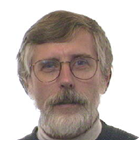 |
- Arnold Rots, POC Chair (SAO),
arots@head.cfa.harvard.edu
- Arnold Rots started out as a radio astronomer and is
currently the archive astrophysicist for the Chandra
X-ray Observatory Science Center
(CXC) at the
Harvard-Smithsonian Center for Astrophysics (CfA) in Cambridge,
MA, USA. His specialty in the Virtual Observatory context is
metadata for Space-Time Coordinates. He also chairs the
North-American FITS committee and the Astrophysics Data Centers
Executive Council (ADEC).
|
| 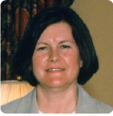 |
- Betty Stobie (Univ. of Arizona),
bstobie@as.arizona.edu
-
Betty has been involved in scientific programming for over 30 years
beginning with programming radar for missle systems (Raytheon) to
weather radar (NCAR) to radio telescopes (NRAO). She was head of
the software development for NRAO's 12-meter telescope for almost
a decade. From there she became involved in programming for the
Space Telescope Science Institute
as programming supervisor for the STSDAS
Group. Currently she is head of the Software Group for the
NICMOS Project at
University of Arizona's
Steward Observatory.
|
| 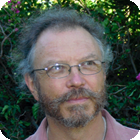 |
- Christian Veillet (CFHT),
veillet@cfht.hawaii.edu
-
Christian is currently the Senior Resident Astronomer at the
Canada-France-Hawaii Telescope,
where he serves as Project Manager/Project Scientist for the
CFHT
MegaPrime Project. His current research areas include
Kuiper Belt Objects, Near Earth asteroids, and Gamma Ray Bursters.
Back in the late 1970s/early 1980s, he made studies of the dynamics
of Uranus and Neptune satellites prior to the Voyager fly-by. Before
joining CFHT in 1996, he spent 12 years at
Observatoire de la Cote d'Azur
in charge of the French
Lunar
Laser Ranging station. There he studied space experiments using
light pulses traveling in space for synchronizing atomic clocks and
testing some aspects of general relativity.
Christian also wrote and installed the telescope control software for
the Korean Mt Bohyun telescope, the THEMIS solar telescope
and the Zimmerwald satellite laser ranging station.
|